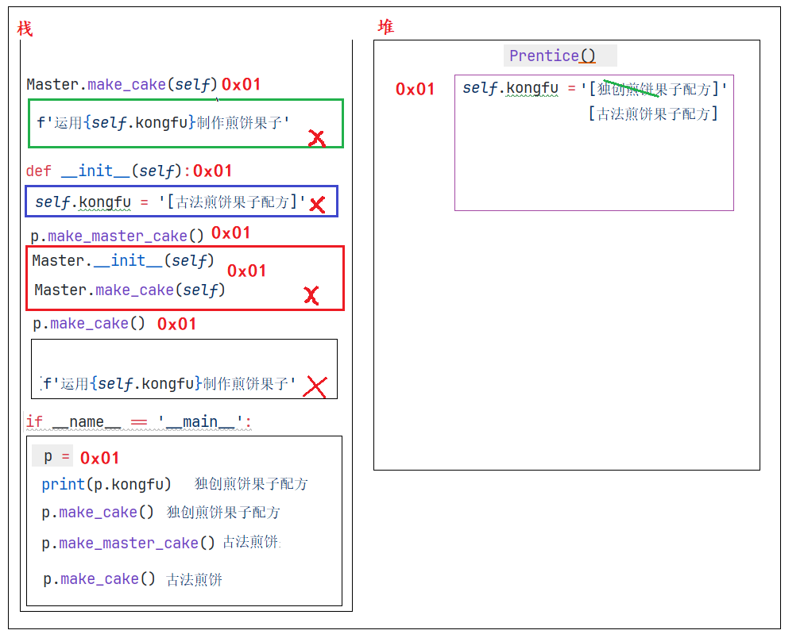

首页 / 课程讲义 / 第 9 讲
🧬 面向对象进阶与学生管理系统
子类重写父类的功能
Python
""" 案例: 演示子类重写父类功能. 重写解释: 概述: 重写也叫覆盖, 即: 子类出现和父类重名的属性 或者 行为, 称之为: 重写. 调用层次: 遵循 就近原则, 子类有就用, 没有就去就近的父类找, 依次查找其所有的父类, 有就用, 没有就报错. """ # 故事3: 小明掌握了老师傅和的技术后，自己潜心钻研出一套自己的独门配方的全新摊煎饼果子技术。 # 1. 老师父类. class Master: # 1.1 属性 def __init__(self): self.kongfu = '[古法煎饼果子配方]' # 1.2 行为 def make_cake(self): print(f'运用{self.kongfu}制作煎饼果子') # 2. 学校类 class School: # 2.1 属性 def __init__(self): self.kongfu = '[AI煎饼果子配方]' # 2.2 行为 def make_cake(self): print(f'运用{self.kongfu}制作煎饼果子') # 3. 徒弟类 class Prentice(School, Master): # 3.1 属性 def __init__(self): self.kongfu = '[独创煎饼果子配方]' # 3.2 行为 def make_cake(self): print(f'运用{self.kongfu}制作煎饼果子') # 4. 测试. if __name__ == '__main__': # 4.1 创建徒弟类对象. p = Prentice() # 4.2 访问属性. print(p.kongfu) # 4.3 调用函数. p.make_cake()
子类访问父类功能
- 方式1: 父类名.父类功能名(self)

Python
""" 案例: 子类重写父类功能后, 继续访问父类功能. 思路: 1. 父类名.父类函数名(self) 精准访问, 想找哪个父类, 就调哪个父类. 2. super().父类函数名() 只能访问最近的那个父类, 有就用, 没有就往后继续查找. """ # 故事4: 很多顾客都希望能吃到徒弟做出的有自己独立品牌的煎饼果子，也有配方技术的煎饼果子味道。 # 1. 老师父类. class Master: # 1.1 属性 def __init__(self): self.kongfu = '[古法煎饼果子配方]' # 1.2 行为 def make_cake(self): print(f'运用{self.kongfu}制作煎饼果子') # 2. 学校类 class School: # 2.1 属性 def __init__(self): self.kongfu = '[AI煎饼果子配方]' # 2.2 行为 def make_cake(self): print(f'运用{self.kongfu}制作煎饼果子') # 3. 徒弟类 class Prentice(School, Master): # 3.1 属性 def __init__(self): self.kongfu = '[独创煎饼果子配方]' # 3.2 行为 def make_cake(self): print(f'运用{self.kongfu}制作煎饼果子') # 3.3 调用父类的功能. def make_master_cake(self): Master.__init__(self) Master.make_cake(self) def make_school_cake(self): School.__init__(self) School.make_cake(self) # 4. 测试. if __name__ == '__main__': # 4.1 创建徒弟类对象. p = Prentice() # 4.2 访问属性. print(p.kongfu) # 独创 # 4.3 调用函数. p.make_cake() # 独创 p.make_master_cake() # 古法 p.make_school_cake() # AI print('-' * 34) p.make_cake() # AI
- 方式2: super().父类功能名()
Python
""" 案例: 子类重写父类功能后, 继续访问父类功能. 思路: 1. 父类名.父类函数名(self) 精准访问, 想找哪个父类, 就调哪个父类. 2. super().父类函数名() 只能访问最近的那个父类, 有就用, 没有就往后继续查找. """ # 故事4: 很多顾客都希望能吃到徒弟做出的有自己独立品牌的煎饼果子，也有配方技术的煎饼果子味道。 # 1. 老师父类. class Master: # 1.1 属性 def __init__(self): self.kongfu = '[古法煎饼果子配方]' # 1.2 行为 def make_cake(self): print(f'运用{self.kongfu}制作煎饼果子') # 2. 学校类 class School: # 2.1 属性 def __init__(self): self.kongfu = '[AI煎饼果子配方]' # 2.2 行为 def make_cake(self): print(f'运用{self.kongfu}制作煎饼果子') # 3. 徒弟类 class Prentice(School, Master): # 3.1 属性 def __init__(self): self.kongfu = '[独创煎饼果子配方]' # 3.2 行为 def make_cake(self): print(f'运用{self.kongfu}制作煎饼果子') # 3.3 调用父类的功能. # def make_master_cake(self): # Master.__init__(self) # Master.make_cake(self) # # def make_school_cake(self): # School.__init__(self) # School.make_cake(self) def make_old_cake(self): super().__init__() super().make_cake() # 4. 测试. if __name__ == '__main__': # 4.1 创建徒弟类对象. p = Prentice() # 4.2 访问属性. print(p.kongfu) # 独创 # 4.3 调用函数. p.make_cake() # 独创 # p.make_master_cake() # 古法 # p.make_school_cake() # AI print('-' * 34) # p.make_cake() # AI p.make_old_cake()
多层继承
Python
""" 案例: 演示多层继承. 多层继承解释: 类A继承类B, 类B继承类C, 这就是多层继承. 目前题设中的继承体系 object <- Master, School <- Prentice <- TuSun """ # 故事4: 很多顾客都希望能吃到徒弟做出的有自己独立品牌的煎饼果子，也有配方技术的煎饼果子味道。 # 1. 老师父类. class Master: # 1.1 属性 def __init__(self): self.kongfu = '[古法煎饼果子配方]' # 1.2 行为 def make_cake(self): print(f'运用{self.kongfu}制作煎饼果子') # 2. 学校类 class School: # 2.1 属性 def __init__(self): self.kongfu = '[AI煎饼果子配方]' # 2.2 行为 def make_cake(self): print(f'运用{self.kongfu}制作煎饼果子') # 3. 徒弟类 class Prentice(School, Master): # 3.1 属性 def __init__(self): self.kongfu = '[独创煎饼果子配方]' # 3.2 行为 def make_cake(self): print(f'运用{self.kongfu}制作煎饼果子') # 3.3 调用父类的功能. def make_master_cake(self): Master.__init__(self) Master.make_cake(self) def make_school_cake(self): School.__init__(self) School.make_cake(self) # def make_old_cake(self): # super().__init__() # super().make_cake() # 4.创建徒孙类. class TuSun(Prentice): pass # 5. 测试. if __name__ == '__main__': # 5.1 创建徒孙类对象. ts = TuSun() # 5.2 调用功能. ts.make_cake() # Prentice类的 ts.make_master_cake() # Master类的 ts.make_school_cake() # School类的
封装入门
Python
""" 案例: 演示封装之私有属性. 封装简介: 概述: 属于面向对象的三大特征之一, 就是隐藏对象的属性和实现细节, 仅对外提供公共的访问方式. 怎么封装? 我们学的 函数, 类 都是封装的体现. 好处: 1. 提高代码的安全性. 由 私有化 来保证 2. 提高代码的复用性. 由 函数 来保证 弊端: 代码量增加了. 因为私有内容外界想访问, 必须提供公共的访问方式, 代码量就增加了. 私有格式: __属性名 __函数名() """ # 故事5: 小明把技术给徒孙的时候, 不希望把自己的私房钱给徒孙, 代码模拟. # 1. 定义师傅类Master # 2. 定义学校类School # 3. 定义徒弟类 class Prentice: # 3.1 属性 def __init__(self): self.kongfu = '[煎饼果子配方]' # 私房钱. self.__money = 20000 # 3.2 方法 def make_cake(self): print(f'运用{self.kongfu}制作煎饼果子') # 3.3 针对私有的属性, 提供公共的访问方式. def get_money(self): # 获取 return self.__money def set_money(self, money): # 设置 self.__money = money # 4. 定义徒孙类 class TuSun(Prentice): pass # 5. 测试. if __name__ == '__main__': ts = TuSun() print(ts.kongfu) ts.make_cake() print('-' * 34) # print(ts.__money) # 报错, 父类私有成员, 子类无法访问. ts.set_money(100) print(ts.get_money()) # 通过父类提供的公共的访问方式, 访问父类的私有成员.
多态入门
Python
""" 案例: 演示多态入门. 多态概述: 专业版: 同一个函数, 接收不同的参数, 有不同的效果 大白话: 同一个事物在不同时刻表现出来的不同状态, 形态. 前提条件: 1. 要有继承. 2. 要有方法重写, 不然多态无意义. 3. 要有父类引用指向子类对象. 案例: 动物类案例. """ # 1.定义动物类 class Animal: # 抽象类(也叫: 接口) def speak(self): # 抽象方法 pass # 2. 定义子类, 狗类. class Dog(Animal): def speak(self): print('狗叫: 汪汪汪') # 3. 定义子类, 猫类. class Cat(Animal): def speak(self): print('猫叫: 喵喵喵') # 汽车类 class Car: def speak(self): print('车叫: 滴滴滴') # 4. 定义函数, 接收不同的动物对象, 调用speak方法 def make_noise(an:Animal): # an:Animal = Dog() an.speak() # 5. 测试. if __name__ == '__main__': # an:Animal = Dog() # 父类引用指向子类对象. # d:Dog = Dog() # 创建狗类对象. # 5.1 创建狗类, 猫类对象. d = Dog() c = Cat() # 5.2 演示多态. make_noise(d) make_noise(c) print('-' * 34) # 5.3 测试汽车类 c = Car() make_noise(c)
多态案例_构建对战平台

Python
""" 案例: 演示Python的多态案例之 战斗平台. 需求: 1. 构建对战平台(公共的函数) object_play(), 接收: 英雄机 和 敌机. 2. 在不修改对战平台代码的情况下, 完成多次战斗. 3. 规则: 英雄机, 1代战斗力60, 2代战斗力80 敌机, 1代战斗力70 代码提示: 英雄机1代 HeroFighter 英雄机2代 AdvHeroFighter 敌机 EnemyFighter """ # 1. 定义英雄机1代, 战斗力 60 class HeroFighter: def power(self): return 60 # 2. 定义英雄机2代, 战斗力 80 class AdvHeroFighter(HeroFighter): def power(self): return 80 # 3. 敌机1代 class EnemyFighter: def power(self): return 70 # 4. 构建对战平台, 公共的函数, 接收不同的参数, 有不同的效果 -> 多态. # def object_play(hero: HeroFighter, enemy:EnemyFighter): def object_play(hero, enemy): # 参1: 英雄机, 参2: 敌机 if hero.power() >= enemy.power(): print('英雄机 战胜 敌机!') else: print('英雄机 惜败 敌机!') # 5. 测试. if __name__ == '__main__': # 思路1: 不使用多态, 完成对战. # 场景1: 英雄机1代 vs 敌机1代 h1 = HeroFighter() e1 = EnemyFighter() if h1.power() >= e1.power(): print('英雄机1代 战胜 敌机1代') else: print('英雄机1代 惜败 敌机1代') print('-' * 34) # 场景2: 英雄机2代 vs 敌机1代 h2 = AdvHeroFighter() e1 = EnemyFighter() if h2.power() >= e1.power(): print('英雄机2代 战胜 敌机1代') else: print('英雄机2代 惜败 敌机1代') print('*' * 34) # 思路2: 使用多态, 完成对战. h1 = HeroFighter() h2 = AdvHeroFighter() e1 = EnemyFighter() # 场景1: 英雄机1代 vs 敌机1代 object_play(h1, e1) print('-' * 34) # 场景2: 英雄机2代 vs 敌机1代 object_play(h2, e1) # object_play(h2, h1)
抽象类案例_空调案例
Python
""" 案例: 演示抽象类的用法. 抽象类解释: 概述: 在Python中, 抽象类 = 接口, 即: 有抽象方法的类就是 抽象类,也叫 接口. 抽象方法 = 没有方法体的方法, 即: 方法体是 pass 修饰的. 作用/目的: 抽象类一般充当父类, 用于指定行业规范, 准则, 具体的实现交由 子类 来完成. """ # 1. 定义抽象类, 空调类, 设定: 空调的规则. class AC: # 1.1 制冷 def cool_wind(self): pass # 1.2 制热 def hot_wind(self): pass # 1.3 左右摆风 def swing_l_r(self): pass # 2. 定义子类(小米空调), 实现父类(空调类)中的所有抽象方法. class XiaoMi(AC): # 2.1 制冷 def cool_wind(self): print('小米 核心 制冷技术!') # 2.2 制热 def hot_wind(self): print('小米 核心 制热技术!') # 2.3 左右摆风 def swing_l_r(self): print('小米空调 静音左右摆风 技术!') # 3. 定义子类(格力空调), 实现父类(空调类)中的所有抽象方法. class Gree(AC): # 3.1 制冷 def cool_wind(self): print('格力 核心 制冷技术!') # 3.2 制热 def hot_wind(self): print('格力 核心 制热技术!') # 3.3 左右摆风 def swing_l_r(self): print('格力空调 低频左右摆风 技术!') # 4. 测试 if __name__ == '__main__': # 4.1 小米空调 xm = XiaoMi() xm.cool_wind() xm.hot_wind() xm.swing_l_r() print('-' * 23) # 4.2 格力空调 gree = Gree() gree.cool_wind() gree.hot_wind() gree.swing_l_r()
对象属性和类型属性解释
- 图解

- 代码演示
Python
""" 案例: 演示对象属性 和 类属性. 属性介绍: 概述: 它是1个名词, 用来描述事物的外在特征的. 分类: 对象属性: 属于每个对象的, 即: 每个对象的属性值可能都不同. 修改A对象的属性, 不影响对象B 类属性: 属于类的, 即: 能被该类下所有的对象所共享. A对象修改类属性, B对象访问的是修改后的. 对象属性: 定义到 init 魔法方法中的属性, 每个对象都有自己的内容. 只能通过 对象名. 的方式调用. 类属性: 定义到类中, 函数外的属性(变量), 能被该类下所有的对象所共享. 既能通过 类名. 还能通过 对象名. 的方式来调用, 推荐使用 类名. 的方式. """ # 需求: 演示 对象属性 和 类属性相关. # 1. 定义1个 Student类, 每个学生都有自己的 姓名, 年龄 class Student: # 2. 定义类属性 teacher_name = '水镜先生' # 3. 定义对象属性, 即: 写到 init 魔法方法中的属性. def __init__(self, name, age): self.name = name self.age = age # 4. 定义str魔法方法, 输出对象的信息. def __str__(self): return '姓名: %s, 年龄: %d' % (self.name, self.age) # 5. 测试 if __name__ == '__main__': # 场景1: 对象属性 s1 = Student('曹操', 38) s2 = Student('曹操', 38) # 修改s1的属性值. s1.name = '许褚' s1.age = 40 print(f's1: {s1}') print(f's2: {s2}') print('-' * 23) # 场景2: 类属性 # 1. 类属性可以通过 类名. 还可以通过 对象名. 的方式调用. print(s1.teacher_name) # 水镜先生 print(s2.teacher_name) # 水镜先生 print(Student.teacher_name) # 水镜先生 print('-' * 23) # 2.尝试用 对象名. 的方式来修改 类属性. # s1.teacher_name = '老师' # 只能给s1对象赋值, 不能给类属性赋值. # 3. 如果要修改类变量的值, 只能通过 类名. 的方式实现. Student.teacher_name = '老师' print(s1.teacher_name) # 老师 print(s2.teacher_name) # 老师 print(Student.teacher_name) # 老师
类方法和静态方法
Python
""" 案例: 演示类方法和静态方法. 类方法: 属于类的方法, 可以通过 类名. 还可以通过 对象名. 的方式来调用. 定义类方法的时候, 必须使用装饰器 @classmethod, 且第1个参数必须表示 类对象. 静态方法: 属于该类下所有对象所共享的方法, 可以通过 类名. 还可以通过 对象名. 的方式来调用. 定义静态方法的时候, 必须使用装饰器 @staticmethod, 且参数传不传都可以. 区别: 1. 类方法的第1个参数必须是 类对象, 静态方法无参数的特殊要求 2. 你可以理解为: 如果函数中要用 类对象, 就定义成类方法, 否则定义成 静态方法, 除此外, 并无任何区别. """ # 1. 定义学生类. class Student: # 2. 定义类属性. school = '编程学习者' # 3. 定义类方法 @classmethod def show1(cls): print(f'cls: {cls}') # <class '__main__.Student'> print(cls.school) print('我是类方法') # 4. 定义静态方法 @staticmethod def show2(): print(Student.school) print('我是静态方法') # 5. 测试. if __name__ == '__main__': s1 = Student() s1.show1() print('-' * 23) s1.show2()
学生管理系统_学生类代码编写
如下是写到 student.py 文件中的代码
Python
""" 该文件用于记录 学生类, 学生的属性信息为: 姓名, 性别, 年龄, 手机号, 描述信息. """ # 1. 定义学生类. class Student: # 2. 定义魔法方法, 初始化属性信息. def __init__(self, name, gender, age, phone, desc): """ 该魔法方法, 用于初始化 属性信息. :param name: 学生姓名 :param gender: 性别 :param age: 年龄 :param phone: 手机号 :param desc: """ self.name = name self.gender = gender self.age = age self.phone = phone self.desc = desc # 3. 定义魔法方法, 用于打印学生信息. def __str__(self): """ 该魔法方法, 用于打印学生信息. :return: """ return f'姓名: {self.name}, 性别: {self.gender}, 年龄: {self.age}, 手机号: {self.phone}, 描述信息: {self.desc}' # 4. 测试 if __name__ == '__main__': s = Student('乔峰', '男', 38, '13112345678', '丐帮帮主') print(s)
学生管理系统_框架搭建
如下是写到 studentcms.py 文件中的内容.
Python
""" 该文件用于 完成学生管理系统的 具体业务的操作, 即: 增删改查, 保存学生信息等... """ # 导包 from student import Student # 1. 创建学生管理系统类. class StudentCMS(object): # 2. 通过魔法方法init, 初始化属性信息. def __init__(self): # 创建一个空列表, 用于存储学生信息. self.stu_list = [] # [学生对象, 学生对象, 学生对象] -> [Student(...), Student(...)...] # 3. 定义函数, 实现打印 管理系统的界面. def show_view(self): print('*' * 23) print('学生管理系统V2.0版') print('\t1.添加学生信息') print('\t2.删除学生信息') print('\t3.修改学生信息') print('\t4.查询单个学生信息') print('\t5.查询所有学生信息') print('\t6.保存学生信息') print('\t0.退出系统') print('*' * 23) # 4. 定义函数, 实现添加学生信息功能. def add_student(self): pass # 5. 定义函数, 实现删除学生信息功能. def del_student(self): pass # 6. 定义函数, 实现修改学生信息功能. def update_student(self): pass # 7. 定义函数, 实现查询单个学生信息功能. def search_one_student(self): pass # 8. 定义函数, 实现查询所有学生信息功能. def search_all_student(self): pass # 9. 定义函数, 实现保存学生信息功能. def save_student(self): pass # 10. 定义函数, 实现加载学生信息. def load_student(self): pass # 11. 定义函数, 把上述的所有业务逻辑跑通. def start(self): # 11.1 # 11.2 死循环, 不断的玩儿. while True: # 11.3 # 11.4 打印 学生管理系统的界面. self.show_view() # 11.5 提示用户录入要操作的编号, 并接收. input_num = input('请输入您要操作的编号:') # 11.6 根据用户输入的编号, 做不同的操作. if input_num == '1': # 添加学生信息 print('添加学生信息\n') self.add_student() elif input_num == '2': # 删除学生信息 print('删除学生信息\n') self.del_student() elif input_num == '3': # 修改学生信息 print('修改学生信息\n') self.update_student() elif input_num == '4': # 查询单个学生信息 print('查询单个学生信息\n') self.search_one_student() elif input_num == '5': # 查询所有学生信息 print('查询所有学生信息\n') self.search_all_student() elif input_num == '6': # 保存学生信息 print('保存学生信息\n') self.save_student() elif input_num == '0': # 退出系统, 做二次校验. result = input('您确定要退出吗? (Y/N) -> ') if result.lower() == 'y': # 字符串的lower() -> 把字母转成小写形式. print('谢谢您的使用, 期待下次再会!') break else: # 输入错误 print('录入有误, 请重新录入!\n') # 12. 在main中测试. if __name__ == '__main__': # 12.1 创建学生管理系统对象. cms = StudentCMS() # 12.2 调用学生管理系统对象的start()函数, 启动学生管理系统. cms.start()
学生管理系统_入口文件
如下的代码是写到 main.py 文件中的.
Python
""" 该文件 用作程序的入口文件. """ from studentcms import StudentCMS # 程序的主入口 if __name__ == '__main__': # 1. 创建学生管理系统对象. stu_cms = StudentCMS() # 2. 启动程序即可. stu_cms.start()
学生管理系统_功能实现
- 添加学生
Python
# 4. 定义函数, 实现添加学生信息功能. def add_student(self): # 4.1 提示用户输入学生信息, 并接收. name = input('请输入学生姓名:') gender = input('请输入学生性别:') age = int(input('请输入学生年龄:')) phone = input('请输入学生电话:') desc = input('请输入学生描述信息:') # 4.2 把上述的信息封装成学生对象. stu = Student(name, gender, age, phone, desc) # 4.3 把学生对象添加到列表中. self.stu_list.append(stu) # 4.4 提示. print(f'添加 {name} 学生信息成功!\n')
- 查看所有学生信息
Python
# 8. 定义函数, 实现查询所有学生信息功能. def search_all_student(self): # 8.1 判断列表长度是否为0, 如果为0, 提示: 暂无学生信息, 请添加后查询. if len(self.stu_list) == 0: print('暂无学生信息, 请添加后查询! \n') else: # 8.2 如果长度不为0, 遍历列表, 打印出所有的学生信息. for stu in self.stu_list: print(stu) print() # 为了格式好看, 加个换行.
- 删除学生信息
Python
# 5. 定义函数, 实现删除学生信息功能. def del_student(self): # 5.1 提示用户输入要删除的学生的姓名, 并接收. del_name = input('请输入要删除的学生姓名:') # 5.2 遍历列表, 找到要删除的学生, 并删除. for stu in self.stu_list: # 5.3 如果当前学生的姓名 和 要删除的学生相同, 就删除该学生信息 if stu.name == del_name: self.stu_list.remove(stu) print(f'学员 {del_name} 信息删除成功!\n') break else: # 走到这里, 说明没有走break, 即: 没有找到这个学生. print('查无此人, 请检查后重新删除!\n')
- 修改学生信息
Python
# 6. 定义函数, 实现修改学生信息功能. def update_student(self): # 6.1 提示用户输入要修改的学生的姓名, 并接收. upd_name = input('请输入要修改的学生姓名:') # 6.2 遍历列表, 找到要修改的学生, 并修改. for stu in self.stu_list: # 6.3 如果当前学生的姓名 和 要修改的学生相同, 就修改该学生信息 if stu.name == upd_name: # 6.4 提示用户录入该学员新的信息. stu.gender = input('请录入修改后的性别: ') stu.age = int(input('请录入修改后的年龄: ')) stu.phone = input('请录入修改后的电话: ') stu.desc = input('请录入修改后的描述信息: ') print(f'学员 {upd_name} 信息修改成功!\n') break else: # 走到这里, 说明没有走break, 即: 没有找到这个学生. print('查无此人, 请检查后重新操作!\n')
- 查询单个学生信息
Python
# 7. 定义函数, 实现查询单个学生信息功能. def search_one_student(self): # 7.1 提示用户输入要查找的学生的姓名, 并接收. search_name = input('请输入要查找的学生姓名:') # 7.2 遍历列表, 找到要查找的学生, 并打印信息. for stu in self.stu_list: # 7.3 如果当前学生的姓名 和 要查找的学生相同, 就打印该学生信息 if stu.name == search_name: print(stu, end='\n\n') break else: # 走到这里, 说明没有走break, 即: 没有找到这个学生. print('查无此人, 请检查后重新操作!\n')
扩展_dict属性
Python
""" 案例: 演示Python内置的dict属性. __dict__ 属性介绍: 它是Python内置的属性, 可以把对象转成字典形式. """ from 学生管理系统_面向对象版.student import Student # 需求1: 把 学生对象 -> 字典形式, 属性名做键, 属性值做值. s1 = Student('德桦', '男', 81, '111', '刻骨铭心') print(s1) # {'name': '德桦', 'gender': '男', 'age': 81, 'phone': '111', 'desc': '刻骨铭心'} my_dict = s1.__dict__ print(my_dict) print(type(my_dict)) print('-' * 23) # 需求2: 把 [学生对象, 学生对象, 学生对象] -> [字典, 字典, 字典] s1 = Student('德桦', '男', 81, '111', '刻骨铭心') s2 = Student('志奇', '男', 22, '222', '我不是紫琦') s3 = Student('紫琦', '男', 66, '333', '有请志奇') stu_list = [s1, s2, s3] # 列表推导式. list_dict = [stu.__dict__ for stu in stu_list] print(list_dict) print('-' * 23) # 需求3: 把 {'name': '德桦', 'gender': '男', 'age': 81, 'phone': '111', 'desc': '刻骨铭心'} -> 学生对象 my_dict = {'name': '德桦', 'gender': '男', 'age': 81, 'phone': '111', 'desc': '刻骨铭心'} s5 = Student(my_dict['name'], my_dict['gender'], my_dict['age'], my_dict['phone'], my_dict['desc']) print(s5) print(type(s5)) print('-' * 23) s6 = Student(**my_dict) # 效果同上 print(s6) print(type(s6))
学生管理学系统_保存学生信息
Python
# 9. 定义函数, 实现保存学生信息功能. def save_student(self): # 9.1 关联 学生信息文件. with open('./stu_data.txt', 'w', encoding='utf-8') as dest_f: # 9.2 把 [学生对象, 学生对象...] -> [字典, 字典...] stu_dict = [stu.__dict__ for stu in self.stu_list] # 9.3 把字典列表, 持久化到文件中. dest_f.write(str(stu_dict)) # 记得转成字符串再写入.
学生管理系统_加载学生信息
Python
# 10. 定义函数, 实现加载学生信息. def load_student(self): # 10.1 加入异常处理, 有可能文件不存在. try: # 10.2 关联学生信息文件. with open('./stu_data.txt', 'r', encoding='utf-8') as src_f: # 10.3 一次性读取所有数据. stu_data = src_f.read() # '[字典, 字典...]' # 10.4 把上述的字符串, 转为列表. stu_list = eval(stu_data) # '' # 10.5 判断如果列表为空, 就赋予空列表. if len(stu_list) == 0: self.stu_list = stu_list else: self.stu_list = [Student(**stu) for stu in stu_list] # 10.6 把stu_list(列表套字典) 转成 [学生对象, 学生对象...], 并赋值给 self.stu_list except: # 10.7 走这里, 说明目的地文件不存在, 创建并写入[]即可. with open('./stu_data.txt', 'w', encoding='utf-8') as src_f: src_f.write('[]')
Python
# 10. 定义函数, 实现加载学生信息. def load_student(self): # 10.1 加入异常处理, 有可能文件不存在. try: # 10.2 关联学生信息文件. with open('./stu_data.txt', 'r', encoding='utf-8') as src_f: # 10.3 一次性读取所有数据. stu_data = src_f.read() # '[字典, 字典...]' # 10.4 把上述的字符串, 转为列表. stu_list = eval(stu_data) # '' # 10.5 判断如果列表为空, 就赋予空列表. if len(stu_list) == 0: stu_list = [] # 10.6 把stu_list(列表套字典) 转成 [学生对象, 学生对象...], 并赋值给 self.stu_list self.stu_list = [Student(**stu_dict) for stu_dict in stu_list] except: # 10.7 走这里, 说明目的地文件不存在, 创建即可. with open('./stu_data.txt', 'w', encoding='utf-8') as src_f: pass
学生管理系统_最终代码
- student.py 文件中的代码
Python
""" 该文件用于记录 学生类, 学生的属性信息为: 姓名, 性别, 年龄, 手机号, 描述信息. """ # 1. 定义学生类. class Student: # 2. 定义魔法方法, 初始化属性信息. def __init__(self, name, gender, age, phone, desc): """ 该魔法方法, 用于初始化 属性信息. :param name: 学生姓名 :param gender: 性别 :param age: 年龄 :param phone: 手机号 :param desc: """ self.name = name self.gender = gender self.age = age self.phone = phone self.desc = desc # 3. 定义魔法方法, 用于打印学生信息. def __str__(self): """ 该魔法方法, 用于打印学生信息. :return: """ return f'姓名: {self.name}, 性别: {self.gender}, 年龄: {self.age}, 手机号: {self.phone}, 描述信息: {self.desc}' # 4. 测试 if __name__ == '__main__': s = Student('乔峰', '男', 38, '13112345678', '丐帮帮主') print(s)
- studentcms.py 文件中的代码
Python
""" 该文件用于 完成学生管理系统的 具体业务的操作, 即: 增删改查, 保存学生信息等... """ # 导包 from student import Student import time # 1. 创建学生管理系统类. class StudentCMS(object): # 2. 通过魔法方法init, 初始化属性信息. def __init__(self): # 创建一个空列表, 用于存储学生信息. self.stu_list = [] # [学生对象, 学生对象, 学生对象] -> [Student(...), Student(...)...] # self.stu_list = [ # Student('德桦', '男', 81, '111', '刻骨铭心'), # Student('志奇', '男', 22, '222', '我不是紫琦'), # Student('紫琦', '男', 66, '333', '有请志奇'), # Student('冷哥', '男', 88, '444', '谁动了我的水冷'), # Student('卷帘', '男', 52, '555', '谁动了我的大酱'), # ] # 3. 定义函数, 实现打印 管理系统的界面. # 因为该函数中没有使用self, 所以可以把该函数定义为静态方法. @staticmethod def show_view(): print('*' * 23) print('学生管理系统V2.0版') print('\t1.添加学生信息') print('\t2.删除学生信息') print('\t3.修改学生信息') print('\t4.查询单个学生信息') print('\t5.查询所有学生信息') print('\t6.保存学生信息') print('\t0.退出系统') print('*' * 23) # 4. 定义函数, 实现添加学生信息功能. def add_student(self): # 4.1 提示用户输入学生信息, 并接收. name = input('请输入学生姓名:') gender = input('请输入学生性别:') age = int(input('请输入学生年龄:')) phone = input('请输入学生电话:') desc = input('请输入学生描述信息:') # 4.2 把上述的信息封装成学生对象. stu = Student(name, gender, age, phone, desc) # 4.3 把学生对象添加到列表中. self.stu_list.append(stu) # 4.4 提示. print(f'添加 {name} 学生信息成功!\n') # 5. 定义函数, 实现删除学生信息功能. def del_student(self): # 5.1 提示用户输入要删除的学生的姓名, 并接收. del_name = input('请输入要删除的学生姓名:') # 5.2 遍历列表, 找到要删除的学生, 并删除. for stu in self.stu_list: # 5.3 如果当前学生的姓名 和 要删除的学生相同, 就删除该学生信息 if stu.name == del_name: self.stu_list.remove(stu) print(f'学员 {del_name} 信息删除成功!\n') break else: # 走到这里, 说明没有走break, 即: 没有找到这个学生. print('查无此人, 请检查后重新删除!\n') # 6. 定义函数, 实现修改学生信息功能. def update_student(self): # 6.1 提示用户输入要修改的学生的姓名, 并接收. upd_name = input('请输入要修改的学生姓名:') # 6.2 遍历列表, 找到要修改的学生, 并修改. for stu in self.stu_list: # 6.3 如果当前学生的姓名 和 要修改的学生相同, 就修改该学生信息 if stu.name == upd_name: # 6.4 提示用户录入该学员新的信息. stu.gender = input('请录入修改后的性别: ') stu.age = int(input('请录入修改后的年龄: ')) stu.phone = input('请录入修改后的电话: ') stu.desc = input('请录入修改后的描述信息: ') print(f'学员 {upd_name} 信息修改成功!\n') break else: # 走到这里, 说明没有走break, 即: 没有找到这个学生. print('查无此人, 请检查后重新操作!\n') # 7. 定义函数, 实现查询单个学生信息功能. def search_one_student(self): # 7.1 提示用户输入要查找的学生的姓名, 并接收. search_name = input('请输入要查找的学生姓名:') # 7.2 遍历列表, 找到要查找的学生, 并打印信息. for stu in self.stu_list: # 7.3 如果当前学生的姓名 和 要查找的学生相同, 就打印该学生信息 if stu.name == search_name: print(stu, end='\n\n') break else: # 走到这里, 说明没有走break, 即: 没有找到这个学生. print('查无此人, 请检查后重新操作!\n') # 8. 定义函数, 实现查询所有学生信息功能. def search_all_student(self): # 8.1 判断列表长度是否为0, 如果为0, 提示: 暂无学生信息, 请添加后查询. if len(self.stu_list) == 0: print('暂无学生信息, 请添加后查询! \n') else: # 8.2 如果长度不为0, 遍历列表, 打印出所有的学生信息. for stu in self.stu_list: print(stu) print() # 为了格式好看, 加个换行. # 9. 定义函数, 实现保存学生信息功能. def save_student(self): # 9.1 关联 学生信息文件. with open('./stu_data.txt', 'w', encoding='utf-8') as dest_f: # 9.2 把 [学生对象, 学生对象...] -> [字典, 字典...] stu_dict = [stu.__dict__ for stu in self.stu_list] # 9.3 把字典列表, 持久化到文件中. dest_f.write(str(stu_dict)) # 记得转成字符串再写入. # 10. 定义函数, 实现加载学生信息. def load_student(self): # 10.1 加入异常处理, 有可能文件不存在. try: # 10.2 关联学生信息文件. with open('./stu_data.txt', 'r', encoding='utf-8') as src_f: # 10.3 一次性读取所有数据. stu_data = src_f.read() # '[字典, 字典...]' # 10.4 把上述的字符串, 转为列表. stu_list = eval(stu_data) # '' # 10.5 判断如果列表为空, 就赋予空列表. if len(stu_list) == 0: stu_list = [] # 10.6 把stu_list(列表套字典) 转成 [学生对象, 学生对象...], 并赋值给 self.stu_list self.stu_list = [Student(**stu_dict) for stu_dict in stu_list] except: # 10.7 走这里, 说明目的地文件不存在, 创建即可. with open('./stu_data.txt', 'w', encoding='utf-8') as src_f: pass # 11. 定义函数, 把上述的所有业务逻辑跑通. def start(self): # 11.1 加载学生信息. self.load_student() # 11.2 死循环, 不断的玩儿. while True: # 11.3 为了效果更明显, 加入: 延迟(休眠线程) time.sleep(1) # 11.4 打印 学生管理系统的界面. StudentCMS.show_view() # 11.5 提示用户录入要操作的编号, 并接收. input_num = input('请输入您要操作的编号:') # 11.6 根据用户输入的编号, 做不同的操作. if input_num == '1': # 添加学生信息 # print('添加学生信息\n') self.add_student() elif input_num == '2': # 删除学生信息 # print('删除学生信息\n') self.del_student() elif input_num == '3': # 修改学生信息 # print('修改学生信息\n') self.update_student() elif input_num == '4': # 查询单个学生信息 # print('查询单个学生信息\n') self.search_one_student() elif input_num == '5': # 查询所有学生信息 # print('查询所有学生信息\n') self.search_all_student() elif input_num == '6': # 保存学生信息 self.save_student() print('保存学生信息成功!\n') elif input_num == '0': # 退出系统, 做二次校验. result = input('您确定要退出吗? (Y/N) -> ') if result.lower() == 'y': # 字符串的lower() -> 把字母转成小写形式. # 在退出前, 自动保存学生数据到文件. self.save_student() print('谢谢您的使用, 期待下次再会!') break else: # 输入错误 print('录入有误, 请重新录入!\n') # 12. 在main中测试. if __name__ == '__main__': # 12.1 创建学生管理系统对象. cms = StudentCMS() # 12.2 调用学生管理系统对象的start()函数, 启动学生管理系统. cms.start() # import os # print(os.getcwd())
- main.py 文件中的代码
Python
""" 该文件 用作程序的入口文件. """ from studentcms import StudentCMS # 程序的主入口 if __name__ == '__main__': # 1. 创建学生管理系统对象. stu_cms = StudentCMS() # 2. 启动程序即可. stu_cms.start()